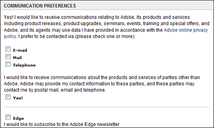
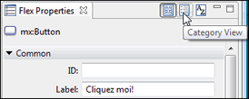

Hein c'est quoi ce truc Flex?! Encore une de ces technos bizarres qui servent à rien?!!
Ola, à peine commencé on me harcèle déjà :p
La plupart des gens savent de quoi je parle lorsque je dis "Flash": "Ah oui c'est ce machin qui permet de faire des trucs qui bougent sur les pages d'internet!" Par contre quand je dis Flex: "... heeeeuuu ... c'est un truc flexible?..."
Si c'est votre cas je ne vous en veux pas, c'est génial ce tuto est fait pour vous! :D
Flex : solution de développement puissante permettant la création et le déploiement d'applications RIA (Rich Internet Application). Projet commencé par Macromedia en 2004 puis repris par Adobe en 2006 (dû au rachat de Macromedia par Adobe).
Eh, mais Flash permet déjà de faire des RIA, à quoi bon une autre techno ?
Au commencement, Flash ne permettait que de faire des animations et l'utilisateur ne pouvait pas interagir avec elles. Il s'agissait en quelque sorte de GIF animés améliorés. Ensuite, Flash s'est doté d'un langage de programmation, "ActionScript", qui permettait d'ajouter du code derrière l'animation afin de la rendre dynamique (interaction avec l'utilisateur possible). Avec les différentes améliorations apportées au cours du temps à l'ActionScript, deux orientations différentes de la technologie Flash ont commencé à apparaître :
voie n°1 : Flash utilisé surtout pour faire des animations avec un contenu graphique évolué, mais peu utilisé pour ses fonctionnalités de programmation ;
voie n°2 : Flash utilisé surtout pour ses fonctionnalités de programmation avec un contenu graphique modéré.
La voie n°1 était plus adaptée aux graphistes, alors que la voie n°2 correspondait davantage à l'utilisation de Flash par des développeurs. Fort de cette déviance de l'utilisation de Flash, Macromedia a décidé d'agir en faveur des développeurs en créant une solution de développement qui leur serait plus adaptée. Tadaaaa... j'ai nommé : Flex !
En quoi Flex est-il plus adapté aux développeurs ? Et d'abord, c'est quoi la différence entre Flash et Flex ?
Flash n'est pas une plate-forme de développement, il n'a pas été conçu dans le but de le devenir, et ne le deviendra certainement jamais. Les versions 1 et 2 d'ActionScript n'étaient que des solutions de développement greffées à Flash pour lui permettre de créer du contenu interactif. Le grand hic, c'est qu'ActionScript ressemblait plus à de la bidouille qu'à un langage de programmation propre et normalisé. L'apprentissage d'ActionScript pour un développeur était, de ce fait, souvent long et rigoureux.
Flex est une plate-forme de développement conçue spécifiquement pour les développeurs et qui s'appuie sur une nouvelle version du langage : ActionScript 3. Ce dernier est un langage qui obéit aux règles de la POO (Programmation Orientée Objet) et agrandit considérablement les possibilités de création en termes de développement. Il dispose d'un framework fournissant au développeur de nombreuses classes, ce qui permet un développement rapide et un code mieux structuré. Contrairement à Flash, Flex ne dispose pas d'outils de dessin. Les composants nécessaires sont déjà créés, le développeur peut les insérer à souhait et modifier leur apparence au besoin. Pour ceux qui connaissent Visual Basic, il s'agit du même principe (juste le principe ! :p ). Dernier détail : il est possible de créer des animations avec Flex, mais il faut les écrire en ActionScript ; pas très pratique, donc... :o Mais pas de panique ! Il est possible d'importer du contenu Flash dans une application Flex, possibilité améliorée avec la sortie de Flex Builder 3.
Je vais m'arrêter là pour la présentation de Flex : aller plus en profondeur déboucherait sur une étude technique, ce qui n'est pas le but ici. Sachez toutefois que le Web regorge d'informations si vous souhaitez en savoir plus sur les avantages, les inconvénients, les performances, la sécurité, etc.
Maintenant, pour les petits impatients qui ne peuvent pas attendre de voir à quoi ressemble une application Flex, voici une démo qui va vous intéresser (une fois la page chargée, cliquez sur Products en haut). Si vous n'avez pas le plug-in Flash Player 9 installé, prenez patience et passez au chapitre suivant :p .
Cliquez sur le lien ci-dessus et une fois la page chargée, vous devriez voir ceci :
Si vous avez déjà un compte Macromedia ou Adobe, utilisez-le pour vous logger, sinon créez un nouveau compte en cliquant sur Create an Adobe account.

Une fois inscrits et loggés, vous devriez arriver sur la page suivante :
Dans la liste de sélection, choisissez la version qui correspond à votre langue et à votre système d'exploitation. Ne cherchez pas de version française de Flex, il n'y en a pour le moment aucune. Une solution consisterait à installer Eclipse avec le pack de langages additionnels pour la langue française, puis d'installer le plugin Flex. Je n'ai pas testé cette solution, n'hésitez pas à me faire part de vos feedbacks si vous avez essayé. :D
Installation
Une fois le fichier téléchargé, lancez l'installation. L'installation n'a rien de très compliqué, mais juste au cas où, suivons-la étape par étape.
Sur l'écran d'accueil, on vous propose de choisir votre langue (ce qui entre nous est un peu stupide puisque la liste ne propose qu'un seul choix : l'anglais). Cliquez sur le bouton ok.
La page qui s'affiche vous recommande de fermer toutes les applications en cours d'exécution avant de continuer. Je vous recommande effectivement de fermer les applications "lourdes", c'est-à-dire celles qui prennent beaucoup d'espace mémoire, ou dont le processus sollicite beaucoup le processeur (évitez par exemple d'encoder un divX pendant ce temps-là :D ). Ah et euh... oui, n'oubliez pas de gardez votre navigateur préféré ouvert, vous en aurez besoin pour continuer de suivre ce tutoriel ^^ . Vous pouvez ensuite cliquer sur Next.
Lisez et acceptez les accords de licence, cliquez sur Next.
Choisissez votre répertoire de destination, cliquez sur Next.
Vérifiez que les cases pour installer le plugin Flash Player 9 pour IE, Netscape ou Firefox sont bien cochées. C'est important sinon vous ne pourrez pas lancer vos applications Flex ! Vous avez aussi le choix d'installer l'extension ColdFusion ou le plug-in JavaScript. Si vous pensez utiliser ces technologies, cochez également ces cases mais sachez que ces installations ne sont pas indispensables au développement d'une application Flex. Cliquez sur Next.
Si votre navigateur préféré est ouvert, l'installateur vous demandera de le fermer pour pouvoir installer Flash Player. Cette fois-ci, pas le choix. Fermez donc votre navigateur, cliquez sur Next puis sur install et revenez me voir une fois l'installation terminée. :)
Félicitations ! :D Flex Builder 3 est maintenant installé sur votre ordinateur. Essayez donc de lancer l'application pour vérifier que tout s'est bien passé.
Si vous possédez un numéro de licence, entrez-le ici, sinon cliquez sur Continue Trial et vous pourrez utiliser cette installation pour une période de 2 mois :
Il se peut qu'au premier démarrage le message suivant s'affiche dans la fenêtre Flex Start Page :
Citation : Flex Start Page
The Flex Start Page requires the Adobe Flash Player. Please use the installers in the Flex Builder 3/Player/ folder to install the Adobe Flash Player into your default browser.
Si s'est le cas, rendez-vous dans le dossier d'installation de Flex, et dans le dossier Player devrait se trouver un dossier contenant les installations du Player Flash pour votre système d'exploitation. Fermez Flex, exécutez la commande Install Flash Player 9 ActiveX et réessayez de lancer Flex. L'installation du contrôle ActiveX devrait suffire à régler le problème ; toutefois, si ça n'est pas le cas, exécutez également Install Flash Player 9 Plugin (vous devrez fermer votre navigateur).
Nous allons ensemble créer un nouveau projet très simple permettant de comprendre le fonctionnement de base d'une application Flex.
Si Flex Builder n'est pas lancé, commencez par là (ouh la ça attaque dur ! ^^ ).
Ensuite, cliquez sur File dans le menu principal. Dans le menu qui se déroule sous vos yeux, survolez New avec votre souris. Une liste apparaît avec plusieurs possibilités. Ce qui nous intéresse, nous, c'est de créer un nouveau projet : donc cliquons sur Flex Project. La fenêtre suivante apparaît :
Dans ce tutoriel nous allons créer un projet Web, vérifiez donc que Web Application (runs in Flash Player) est bien coché. Ensuite donnez un nom à votre projet, entrez tutoFlex dans le champ Project Name. Vous avez ensuite la possibilité de choisir où vous souhaitez enregistrer votre projet, ou vous pouvez laisser le chemin par défaut. Le dernier encadré permet de choisir la technologie serveur avec laquelle on va travailler. Par exemple, pour un projet PhP/MySQL, vous choisirez PHP dans la liste. Dans ce tutoriel, je n'utiliserai pas de technologie serveur, vous pouvez donc laisser la sélection sur None et cliquer sur Next.
Dans cette boîte de dialogue on vous demande de choisir le dossier dans lequel les fichiers compilés du projet seront exportés. En d'autres termes, le dossier de votre site web qui va contenir l'application Flex. Pour notre exemple nous laisserons bin-debug, ce dossier sera créé dans la racine de notre projet Flex. Cliquez sur Next.
Ici, on vous demande de choisir un nom pour votre dossier source. Le nom par défaut est src mais vous pouvez bien sur entrer celui qui vous convient. Vous avez également la possibilité d'inclure des dossiers contenant une autre partie du code source mais qui se trouvent en dehors du dossier source principal. Pour cela il suffit de cliquer sur Add Folder. Le champ Output folder URL désigne l'URL de votre application (compilée) sur le serveur où elle s'exécute. Dans notre exemple nous n'utiliserons pas de serveur, nous laisserons donc ce champ vide. Enfin, l'onglet Library Path vous permet d'ajouter des bibliothèques complémentaires au SDK de base. Ceci est pratique si vous disposez de classes spécialisées qui ne font pas partie du SDK, que vous souhaitez pouvoir utiliser dans votre projet. Encore une fois, je vous dis cela à titre informatif, nous n'utiliserons pas de classes supplémentaires dans cet exemple, vous pouvez donc cliquer sur Finish pour terminer.
Tadaaaa! :D Si tout s'est bien passé, le projet est créé, vous devriez obtenir ceci :
Si vous voyez du code au lieu du dégradé gris, cliquez sur le bouton Design au-dessus du code et la fenêtre ci-dessus apparaîtra.
Pour expliquer l'interface, rien de mieux qu'un exemple ! Alors lançons-nous ! ^^
Pour commencer nous allons insérer un bouton, élément de base permettant à l'utilisateur d'interagir avec le programme. Pour cela, allez dans la fenêtre Components et double-cliquez sur le dossier Controls pour afficher la liste des contrôles disponibles :
Sélectionnez le composant Button puis glissez-le dans le plan de travail comme indiqué ci-dessous :
Une fois le bouton inséré dans le plan de travail, il est automatiquement sélectionné et ses propriétés apparaissent dans la fenêtre des propriétés à droite de l'espace de travail :
Cette fenêtre a une grande importance car c'est elle qui vous permettra, entre autres, de modifier l'apparence des différents composants de votre interface graphique. Elle remplace en quelque sorte les outils de dessin de Flash. Vous disposez d'un modèle de base pour votre bouton, mais vous pouvez lui donner une apparence totalement différente en changeant ses propriétés. Amusez-vous avec les propriétés et essayez de modifier votre bouton. Mais copiez pas sur moi ! :colere2:
Voilà le mien ^^ :
Il est beau, hein ? :-° Bon allez : si vous avez copié, je vous pardonne... (Je suis trop bon. :p )
Bon, assez rigolé ! J'ai oublié de parler de la propriété la plus importante de tous les composants : l'identifiant ! Il s'agit du premier champ de la fenêtre des propriétés intitulé "ID". Pourquoi ce champ est-il important ? Parce que c'est lui qui va vous permettre d'accéder à votre bouton au sein du code. Bien sûr, si vous ne comptez pas utiliser de composant dans votre code, vous n'avez pas besoin de spécifier d'ID. Personnellement, je ne spécifie jamais l'ID tout de suite, je rajoute les identifiants au fur et à mesure que je développe, lorsque j'ai besoin d'accéder à un composant. Cela évite de surcharger le code avec des identifiants inutiles.
Eh ?! Vous n'êtes pas en train de vous dire que ça manque de propriétés, quand même, cette fenêtre ? (Si oui, vous aurez un bon point. :D ) En fait, la fenêtre des propriétés est découpée en 2 parties. La première regroupe les propriétés principales en proposant une manière plutôt ergonomique de les modifier ; la seconde, plus manuelle, regroupe toutes les propriétés disponibles pour un composant. Pour y accéder, il suffit de cliquer sur la petite icône intitulée Category View :

La fenêtre suivante apparaît alors :
Ici, les propriétés sont regroupées en 7 groupes distincts : Common, Effects, Events, Layout Constraints, Size, Styles et Other. Le but de ce tutoriel n'est pas de détailler chacune d'entre elles, il y a pour cela le manuel de référence disponible sur Internet, ou bien, en local, en cliquant dans le menu principal sur Help puis sur Help Contents. Dans la fenêtre qui apparaît, allez dans le volet de gauche et cliquez sur le petit "+" à coté de Adobe Flex 3 Help pour dérouler son contenu. Ensuite dans la liste apparue, déroulez Adobe Flex 3 Language Reference. Vous y voilà ! (Je sais : un peu laborieux, l'accès au langage de référence... Mais pas de panique : il y a une méthode plus simple décrite un peu plus loin dans ce tutoriel. Patience. ;) )
Continuons notre projet ! Retournez dans la liste des composants et insérez celui qui est intitulé TextInput :
Comme moi, entrez le texte test dans la propriété Text de l'objet TextInput. Vous pouvez aussi modifier sa taille et sa police si vous le souhaitez.
Voilà ! L'interface graphique de notre application est terminée ! :D
Bon : mais ce n'est pas fini, il faut maintenant donner vie à nos composants. Et pour ça j'ai nommé : ActionScript 3 ! Pour accéder à la partie code du projet, cliquez sur le bouton Source comme indiqué ci-dessous :
La fenêtre de code apparaît :
La ligne 4 est surlignée car le composant TextInput était sélectionné avant que je clique sur le bouton Source. Ici, on ne voit pas beaucoup l'avantage car il n'y a pas beaucoup de lignes mais croyez-moi, à partir d'une centaine de lignes, ceci commence à devenir bien pratique.
Le MXML permet de structurer les composants de votre projet. Les balises sont des composants et les attributs de ces balises sont les propriétés des composants. Un composant conteneur peut contenir d'autres composants entre sa balise ouvrante et sa balise fermante. Ainsi, le code est structuré à la poupée russe (si je puis m'exprimer ainsi, enfin, c'est le principe du XML, quoi ^^ ) avec des conteneurs et des contenants. Attention : tous les composants ne sont pas des conteneurs. Pour savoir si un composant est un conteneur, il suffit de regarder dans le manuel de référence si la classe de votre composant hérite de la classe Container (il est nécessaire d'avoir des notions sur l'héritage pour comprendre cette phrase :p ).
Allez, je vous montre ! Sélectionnez dans la fenêtre le mot Application de la balise <mx:Application> puis appuyez sur Shift + F2. Tadaaa, le manuel de référence s'ouvre directement sur la classe Application (je vous avais dit que je vous montrerai un moyen plus simple d'accéder à l'aide, 'mitonne pas moi ! :D ). À la 3e ligne, il est écrit Inheritance (en français héritage, trop dur :p ) suivi du nom de notre classe puis de toutes les classes parentes de notre classe. Vous remarquez que la classe Application a plein de papas et de mamans dont la classe Container. Conclusion : Youpii ! La classe Application est un composant conteneur ! Essayez maintenant de faire la même manipulation pour la classe Button. Si vous ne vous êtes pas gourés, vous verrez qu'il ne s'agit pas d'un composant conteneur.
Désolé pour la partie ennuyeuse, je fais de mon mieux pour la rendre supportable avec des blagues génialissimes ! (Hum...) Si je dis ça, c'est parce que j'ai un dernier truc barbant à vous dire : toutes les classes ne sont pas des composants ! Pour qu'une classe soit un composant insérable dans le plan de travail, il faut qu'elle hérite de la classe DisplayObject. Et si vous avez bien suivi, vous devriez savoir comment déterminer qu'une classe hérite de la classe DisplayObject.
Allez : retournons à quelque chose d'un peu plus fun que du blabla ! :)
Nous allons faire en sorte que le texte Hello World of Zero! s'affiche dans le composant TextInput lorsque l'on clique sur le bouton. Pour cela, il va falloir insérer du code ActionScript à notre fichier .mxml. Un fichier .mxml est composé de balises, le code ActionScript est donc enveloppé par la balise Script puis par la balise CDATA de la manière suivante :
Insérez donc ces balises dans le projet et ajoutez la fonction boutonClickHandler() comme indiqué ci-dessous :
Cette fonction contiendra le code à exécuter lorsque l'évènement click sera détecté sur notre bouton. Pour que le bouton sache quelle fonction appeler lorsqu'il est cliqué, il faut entrer boutonClickHandler() à sa propriété click. Pour cela, vous avez plusieurs possibilités :
ajouter l'attribut click="boutonClickHandler()" à la balise <mx:Button> ;
retourner à l'interface en cliquant sur le bouton Design, sélectionner le bouton puis entrer boutonClickHandler() dans le champ intitulé On click de la fenêtre des propriétés ;
faire comme dans le point précédent, mais cette fois en cliquant sur Category View dans la fenêtre des propriétés pour entrer boutonClickHandler() dans le champ intitulé click de la catégorie Events.
Maintenant que le lien entre le bouton et la fonction boutonClickHandler() est créé, on va pouvoir ajouter du code à notre fonction. Le code doit affecter la phrase Hello World of Zero! à la propriété text du composant TextInput. Le seul problème, c'est que nous n'avons pas encore donné d'identifiant à ce composant ! Nous allons donc lui ajouter l'identifiant txtInput. Pour cela, vous pouvez utiliser l'une des 3 méthodes décrites ci-dessus, à la seule différence que cette fois on modifie la propriété id, et non la propriété click.
Une fois l'identifiant assigné, tapez dans la fonction boutonClickHandler()txtInput., et au moment où vous taperez le ".", la liste des propriétés du composant txtInput s'affichera (si elle ne s'affiche pas, cela signifie que vous n'avez pas ou mal attribué l'identifiant au composant TextInput).
Appuyez sur t et les propriétés commençant par "t" s'afficheront et parmi elles, la propriété text. Sélectionnez-la et appuyez sur Entrer. Il ne vous reste plus qu'à finir :) .
Allez, je vous donne la réponse, trop dur :p :
txtInput.text="Hello World of Zero!";
Voilà voili voilou ! Il ne reste plus qu'à tester ! :D
Mais bon, pour tester, il faut d'abord compiler. Ne vous inquiétez pas, il n'y a pas de prise de tête pour la compilation. En effet, à chaque sauvegarde le projet est compilé ! (C'est t-y pas merveilleux ? ^^ ). Il vous suffit donc de faire un petit Ctrl + S et c'est réglé ;) .
Enfin, si vous n'avez pas d'erreur de compilation, vous pouvez cliquer sur la petite flèche verte du menu principal pour lancer votre application.
Votre navigateur préféré devrait alors se lancer et vous n'avez plus qu'à cliquer pour tester et voir votre génialissime message s'afficher !
Je vous donne ma version avec la source (clic droit sur l'application -> View Source) :
Voilà c'est tout pour ce tutoriel dont le but était de vous présenter Flex. J'espère que ça vous a plu, si c'est le cas laissez moi des commentaires et j'écrirais d'autres tutoriels sur le sujet :) .